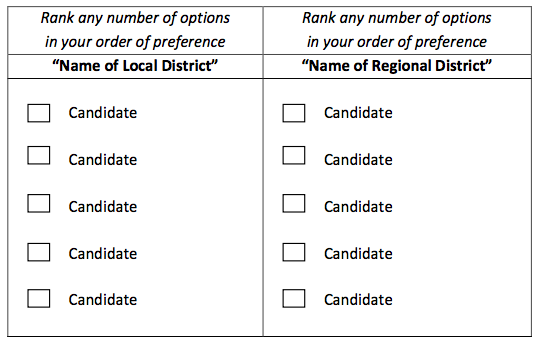

This is an unofficial HTML version of the White Paper on Democratic Renewal released on July 9, 2015. The official copy is available as a PDF file .
This HTML was created by Peter Rukavina , Hacker in Residence , Robertson Library, University of Prince Edward Island, using the open source Sigil ePub editor: plain text was copied from the PDF file into Sigil, broken into chapters, and formatted using HTML with both Sigil and BBEdit .
The HTML version is maintained in a GitHub repository so that it can be enhanced and corrected as needed.
Dear fellow Prince Edward Islanders,
This White Paper on Democratic Renewal presents our province with an opportunity to make history in three significant ways: (i) to continue with exceptional and nation-leading rates of voter participation, (ii) to become the first Canadian jurisdiction to move beyond the “first past the post” system in choosing our elected representatives, and (iii) to consider additional and timely measures to enhance our democratic process.
Throughout our history, Prince Edward Island has benefited from democratic renewal and evolution. Significant milestones include the establishment of responsible government (1851) and extending the right to vote in provincial elections to Roman Catholics (1830), women (1922) and aboriginal people (1963). Other significant steps include the re-introduction of the secret ballot (1913) and the move to single-member constituencies (1994).
With two decades having passed since the electoral reforms of 1994 and with a legal requirement that electoral boundaries be redrawn before the next provincial election, it is timely for Prince Edward Islanders to engage in a further and historic renewal of our democratic institutions. This White Paper has been prepared with contributions and expert input by Dr. Edward MacDonald and senior public service officials.
The White Paper invites all Islanders to work together as we build on our traditions and context to put Prince Edward Island on the map for our democratic processes and rates of participation. Thank you for your consideration and input.
Sincerely,
In an era of concern about the health of democracy, Prince Edward Island stands out in many positive ways. Islanders lead the country in their voter turnout, their interest and engagement in politics, and their contributions to their communities and to civil society. Prince Edward Island’s 2015 election campaign featured vigorous debate on policy issues, and generated the highest voter turnout in three decades. When the ballots were counted, a strong Opposition had been elected, including a seat for the Green Party for the first time in Island history, and a Government with a working majority in the Legislative Assembly.
Our newly elected Government has pledged, in the June 2015 Speech from the Throne , to "initiate and support a thorough and comprehensive examination of ways in which to strengthen our electoral system, our representation, and the role and functioning of the Legislative Assembly."
This initiative recognizes that it is timely to explore democratic renewal for many reasons. Our society is changing continuously, becoming ever more diverse and mobile. It is clear, in Prince Edward Island and across Canada, that a system established by the stable, homogenous community-centred society of the 1800s requires review and renewal to meet the needs of the twenty-first century. Islanders’ high level of political engagement does not necessarily translate into a high level of satisfaction with our electoral system. Many Islanders have articulated a view that their votes are not resulting in fair representation in the Legislature that reflects the diversity of our society.
This is the best of all possible times, then, to tap into the strong interest that Islanders take in political discourse, to ask what we collectively want from our democratic system, and to discuss how to safeguard our strengths while gaining the benefits of democratic renewal and new approaches. We are not facing a crisis of democracy – but we are experiencing pressures, they may intensify, and we can always strive to do better.
This White Paper focuses on exploring the potential for an improved electoral system. The most fundamental decision in a democracy, the core right of every adult citizen, is to choose the people who will make decisions on his or her behalf. The way in which this is done has wide-ranging impacts. The electoral system affects the nature of political campaigns, the type and diversity of candidates, the fairness of representation, and the tone of political discourse. It is essential that this fundamental matter be considered as Prince Edward Island moves ahead with its review of electoral district boundaries that is required by law after the 2015 general election. Following these foundational steps, further consideration can be given to other important elements of our democratic system and processes.
The White Paper inaugurates this work. It outlines the history of our electoral system in Prince Edward Island, explains recent electoral reform trends and approaches across Canada and beyond, and notes emerging pressures for change. The Paper puts forward measures that address electoral concerns of Islanders, while inviting discussion on additional areas of reform. It concludes with a description of the various ways in which Islanders can take part in this process of democratic renewal.
According to French thinker Joseph de Maistre, “Every country has the government it deserves.” Perhaps it is more accurate to say that our forms of government are deeply embedded in their communities. Even as a political system is created or transplanted, it begins to interact with the particular – and changing – circumstances of its host society. Such institutions are rooted in history and they become adapted to local context and experience.
De Maistre’s maxim was first published in 1851. That same year, Great Britain reluctantly granted “Responsible Government” to Prince Edward Island, and Reform leader George Coles became our first premier. But making government more “responsible” to the electorate, that is, a system where the executive branch of government is chosen from the party that commands a majority in its elected legislative branch, was neither a culmination nor a beginning. Rather, it was a landmark on a continuum of change. Sometimes change was coloured by short-term political considerations and, increasingly, it confronted the inertia that results when past usage hardens into “tradition.” It has always reflected societal conditions.
Aside from the traditional forms of governance developed by aboriginal peoples over thousands of years and Île Saint-Jean's status as a satellite of the Royal government in Louisbourg, there was little framework for local government on Prince Edward Island 1 before the advent of British rule in 1763. In 1769, the island was granted colonial status, with all of the administrative machinery that came with it, including provision for a governor (after 1784 reduced to a lieutenant-governor), a council and an elected assembly (MacKinnon).
Frontier conditions dictated how the trappings of colonial government were translated to the new colony. When Governor Walter Patterson named his first Council in 1770 from among "the principal inhabitants" of the colony, there were too few "principal inhabitants" to fill the initial complement of twelve councilors and he began with only seven. (MacKinnon) For similar reasons, Patterson was reluctant to summon an elected assembly and only did so in July 1773 when doubts were entertained about whether his government could enact legislation without the consent of the governed. In a colony lacking both settlers and transportation infrastructure, Patterson found it expedient to treat the entire colony as a single constituency and to limit the size of the House of Assembly to 18 members.
British practice was to restrict the right to vote to substantial property owners (with property initially defined as land) on the principle that only civic-minded property owners, having a greater stake in the country, should have a say in governing it. But on Prince Edward Island, principle had to be sacrificed to pioneer realities, and the only qualification required of its first voters was that they be male, Protestant and residents. With the convening of a House of Assembly, the Council began a dual function, acting as an upper house, or Legislative Council, “to advise and consent,” while retaining its role as an Executive Council, “to advise and assist.” In 1784, the Executive Council was set at nine members and the Legislative Council at twelve, but since the former was chosen from the latter, it was difficult in practice to distinguish between the two. (Carruthers)
The early precedent of adapting British practice to local conditions set the tone for the series of modifications that followed during the 19th century. While political considerations might influence the timing of change, a growing colony required frequent adaptations of its constitutional arrangements.
In 1774, legislation laid the groundwork for an electoral process, leaving the Governor with considerable discretion in the timing and nature of elections (although until 1834, the death of the monarch automatically triggered the election of a new house). Exercising that discretion, Lt. Gov. Edmund Fanning divided the colony into three constituencies, based on its counties, in 1787, with four members elected at large for each county, and two from each county capital. However, the first Election Act was not introduced until 1803 (Carruthers), and it was 1806 before a term length for the Legislature was fixed: seven years, amended to four in 1833. (MacKinnon, 53)
By the 1830s, immigration and natural population increase were transforming the human and physical landscape of the colony. Between 1798 and 1855, the population soared from less than 4,300 people to over 71,000 (Spierenburg, 18). One effect was to engender debate about the emancipation of Roman Catholics, who comprised 45% of the colony’s population but were barred from voting or holding public office. They were finally enfranchised in 1830.
The enlarged electorate no doubt radicalized Island politics, since many Roman Catholic voters were tenants opposed to the leasehold land tenure system. That, in turn, empowered the radical Escheat Party, which won control of the House of Assembly in 1838. While the Escheaters were unable to legislate seizure of proprietorial estates, they did preside over a series of constitutional reforms. The Election Act of 1838 enlarged the House of Assembly to twenty-four members, and four dual-member electoral ridings (including each county capital) were carved out of the old county constituencies. In 1856, the House was enlarged again, to 30 members, chosen from five dual-member ridings in each county. Even in 1856, the convenience – and precedent – of using county/capital subdivisions defied the Island’s demography. Queens County’s population already outstripped Prince and, particularly, Kings County, yet each retained an equal number of seats.
The only concession to population realities addressed the seats apportioned to County capitals. The problem in Prince County was resolved in 1861 when the capital was formally shifted from moribund Princetown to Summerside (Carruthers, 19), while the low population in Georgetown and Royalty was addressed in 1893 by enlarging the riding to encompass a series of headlands roughly centered on Cardigan Bay and linked by the prevalence of water transportation. (MacKinnon v. Government of PEI, PEI Supreme Court, Trial Division, 1993). While unremarked at the time, this was perhaps the first instance of using a specially defined community to draw constituency boundaries. The artificial boundaries of 5th Kings made some sense in a pre-asphalt era when roads remained poor (at best) and water/ice provided the most effective means of transportation.
One of the chief obstacles to land reform in the 1830s and 1840s was the appointed Council, filled as it was with men of substance materially vested in maintaining the status quo. In 1839, a year after the House of Assembly was enlarged, the two Councils, Legislative and Executive, were formally separated, making it possible for members of the House of Assembly to serve on the Executive Council. The essence of Responsible Government, achieved in 1851, was to deliver control of the Executive Council (colloquially, the Cabinet) into the hands of the party that controlled the elected Assembly.
The Legislative Council, too, was targeted for reform, especially after the House of Assembly achieved supremacy. Appointed by the monarch on the recommendation of the Governor, Legislative Councillors served "during pleasure," but in practice it was difficult to dismiss them without demonstrably just cause. Thus, when elections changed control of the Assembly, the Upper House was frequently filled with political opponents appointed under previous administrations, who could only be removed from office by death, disgrace, resignation or emigration. One way around their obstruction was to appoint more Councillors – in 1859 the size of the Legislative Council swelled to seventeen members – but the simpler solution was to bind the Council to the will of the electorate by making it elective. The reformed Legislative Council, established by statute in 1862, consisted of thirteen members, four from each county, with one member from Charlottetown. (MacKinnon, 102-03) Although it was now elective, the Council was still intended to represent men of property. While there was no property qualification for candidates, electors had to be males over the age of twenty-one and have freehold and/or leasehold property to the value of £100.
In the colonial House of Assembly, the property qualifications continued to be minimal. In practice and, finally, in principle, the Assembly was chosen by universal (adult) male suffrage. The manner of its election was more variable. In the wake of the notorious Belfast Riot, the culmination of a long tradition of election-day violence, multi-day voting was abolished in 1848 in order to eliminate the practice of partisan mobs roaming from poll to poll, intimidating voters.
Another invitation to voter intimidation was addressed in 1877 when election by secret ballot, accompanied by voters’ lists and regularized polling procedures, replaced open, oral voting. But in this case, cost trumped conscience. The measure was enacted just as Island governments were beginning to discover the woeful inadequacy of their revenues under Confederation, and the Sullivan government, newly elected on a platform of financial retrenchment, repealed the secret ballot in 1879. It was only reintroduced in 1913 by a Conservative administration proud of its progressive approach to government – and temporarily buoyed by a $100,000 per year increase in its federal subsidy. Even so, it would be 1964 before voters’ lists were required for general elections, and a chief electoral officer appointed.
The same cost-cutting mentality that abandoned the secret ballot also took aim at the province’s upper house. After Confederation in 1873, Prince Edward Island sported six federal Members of Parliament, a thirty-member House of Assembly and a thirteen-member Legislative Council. Surely, critics reasoned, that was more than enough representatives for one small province. Legislation to abolish the Legislative
Council was first introduced in 1879, but the rights of property proved much more durable than the new voting system. It took several attempts, the precedent-setting example of several other Canadian provinces, and considerable, unrecorded backroom negotiation before the Legislative Council was finally done away with – after a fashion – in 1893. 2
The new Legislature uniquely welded the Legislative Council onto the House of Assembly to create a new, thirty-seat “Legislative Assembly” elected from 15 dual-member ridings. Each constituency was represented by a Member of the Legislative Council (MLC) and a Member of the Legislative Assembly (MLA), which allowed for one-on-one contests at the polls and, just as important, allowed opposing parties to match candidates according to religion. The latter consideration was a legacy of the bitter sectarian rivalries of the 1856-1877 period (pitting the Roman Catholic plurality against the Protestant majority), which had exerted a dangerously corrosive effect on party loyalties. Religion had not ceased to matter by the 1890s, but it had gone underground as a political issue, and keeping it “out of politics” meant that it remained a central, backroom consideration for another century.
Once in the House, MLAs and MLCs functioned in exactly the same fashion; the only difference lay in how they got there. Assemblymen were elected according to universal male suffrage, while a property franchise was retained for those electing Councillors (though, again, not for candidates). To vote for Councillor in any constituency, electors must own $325 worth of property in that riding. 3 Property owners could vote only once for Councillor in a given constituency, but they could vote in any riding where they met the property requirements. In a province where the two principal parties were evenly matched in terms of popular support (10% of all elections between 1893 and 1963 were decided by twenty-five or fewer votes) (Clark), electors with multiple votes were a valuable commodity.
The paroxysm of reform that produced the hybrid legislature of 1893 was a high water mark of sorts in terms of constitutional change. Dogged by outmigration and economic stagnation, the Island did not tend towards bold experimentation. The belated re-adoption of the secret ballot in 1913 was perhaps the exception that proved the rule. Another was the foot-dragging decision in 1922 to enfranchise 50% of the Island’s population, its women (If You’re Stronghearted). Considering that the Legislature had first voted on the issue in the 1890s, and that only Quebec and Newfoundland and Labrador among Canadian provinces took longer to give women the vote, women’s suffrage on Prince Edward Island was hardly the crest of a constitutional wave. It was 1951 before a woman ran for the Legislature (Hilda Ramsay, for the provincial CCF party) and 1970 before a woman (Jean Canfield) was elected. Prince Edward Island was proud to become the first province to elect a female premier, Catherine Callbeck, in 1993. While female candidates tend to be popular with voters, and the percentage of female candidates continues greatly to lag the percentage of women in the larger population. (Crossley)
Another historically disenfranchised group, First Nations peoples, received the right to vote in provincial elections in 1963. There was, however, little thought given then, or since, to whether the Island’s original inhabitants might be entitled to special representation within its Legislature.
Although shifting demographics gradually tilted the population towards urban centres, riding boundaries remained unchanged for seventy years, partly because the principal political parties were too evenly matched to risk radical change (Clark). However, after being out of office for twenty-four years, the Conservatives were understandably more open to a measure of reform when they came to power in 1959. In any case, the population imbalance between urban and rural constituencies had become too great to be ignored for much longer. In a larger sense, the reform impulse must also be seen in the context of accelerated modernization that characterized postwar Prince Edward Island.
In 1961 the Shaw Government appointed the Royal Commission on Electoral Reform, chaired by His Honour J. S. DesRoches, Judge of the County Court of King’s County. The Royal Commission’s report was tabled in 1962. The resulting legislation, the Election Act of 1964, in some cases went beyond the Commission’s recommendations. Although the distinction between Councillor and Assemblyman was retained, multiple voting and the property franchise were eliminated. The most contentious clause was actually added by amendment during debate: the elimination of the under-populated riding of 5th Kings and the creation of 6th Queens to belatedly reflect the growing population around Charlottetown. (Carruthers; Russell Clark) With a general election in the offing, the Government found it expedient to restore 5th Kings in 1966, resulting in a Legislature of thirty-two members.
Despite the modest re-distribution of the early 1960s, the question of voter parity among Island ridings continued to bedevil lawmakers into the 1970s, even as an ambitious Comprehensive Development Plan sought to rationalize and re-shape the Island’s economy and society. In 1974 the Legislature appointed an Electoral Boundaries Committee, which, in turn, delegated a sub-committee to canvass public opinion on the issue. General apathy attended its hearings. Consensus favoured replacing the existing constituencies with thirty-two, single-member ridings based on the four federal ridings rather than the three counties. For the first time a form of proportional representation was introduced into the discussion, but only in the sense that interveners stipulated creation of twenty-six identifiably “rural” ridings and six “urban” ones (Committee report). In its report, the Committee generally ignored the sub-committee’s findings, and in turn its recommendations were not proceeded with by the Legislature. In 1988 legislative provision was made for a regular adjustment of riding boundaries. (Electoral Boundaries Act R.S.P.E.I. 1988 Cap. E-2.1)
It took legal action to overcome the Legislative Assembly’s reluctance to tamper with a constituency system that seemed to be working (voter turnouts, after all, were consistently among the highest in Canada). Basing his case on Section 3 of the Canadian Charter of Rights and Freedoms (guaranteeing voting rights), Charlottetown resident Don MacKinnon launched a suit against the Provincial Government in 1991, arguing that the significant population imbalance between Island constituencies essentially meant that his vote counted for less than a vote in a rural riding. Census numbers backed his claim. By 1989, 5th Kings had 1,021 voters per member while 5th Queens had 5,982. The provincial average was 2,788 voters per member; the variance from the average thus ranged from -63% to +115%. Federally and in most other provinces, the allowable deviation was +/- 25%.
In finding that Prince Edward island’s distribution of seats did not satisfy constitutional requirements, the Prince Edward Island Supreme Court (Justice Armand Desroches) sought “effective representation” by balancing “absolute voter parity” with mitigating, non-population factors such as community history, community interest, projected rates of growth, and special geographic features. While Justice Desroches opined that the protection of historic rural interests warranted a measure of flexibility, he ruled that redistribution must follow further, timely investigation.
The decision set the stage for significant electoral reform. In 1994, the Election Act and Electoral Boundaries Commission, chaired by MLA Lynwood MacPherson, proposed a sweeping reform of the Legislature, abolishing the dual member structure in favour of thirty single-member ridings. The county format was retained, but seats were re-apportioned according to population: ten in Prince County, fifteen in Queens, and only five in Kings (Carruthers). Liberal member Ross Young counter-proposed a 27-seat House with a 9:13:5 distribution of seats. His compromise bill was at length adopted. (Electoral Boundaries Act, S.P.E.I. 1994, c. 13)
In his 1993 ruling, Justice Desroches had echoed others’ position that electoral boundaries be adjusted by a non-partisan, independent commission. While the number of seats in the Legislature was now set, the periodic necessity of re-drawing constituency boundaries proved equally contentious. Evidently believing that the 2004 Report of the Electoral Boundaries Commission had privileged voter parity over mitigating considerations such as “community concerns,” the Conservative government appointed a Special Legislative Committee on Electoral Boundaries, which involved Elections PEI in the process of boundary-drawing (Report of Committee). After much tinkering, the new electoral map was approved by the Legislature with a mandated variance of +/-15% in the population of ridings.
The constitutional quest for “voter parity” drove the electoral reform of 1994 and the periodic re-jigging of constituency boundaries that has followed. But it also opened up another line of debate, this time over voting systems. Since 1773, elections had been decided by the traditional “First-Past-the-Post” [FPTP] or plurality model; put simply, the candidate with the greatest number of votes wins. As many political observers noted, the plurality system rarely mirrored the popular vote. Although a party might garner a significant share of the popular vote, those votes often failed to translate into seats. Indeed, the increasing trend in Island politics by the late 1990s was towards huge majorities based on a relatively modest majority of the popular vote (Carruthers, Cousins). Frequently reduced to one or two members, the Official Opposition was challenged to function effectively in the Legislature, Out of seven general elections from 1989 to 2011, only one, in 1996, resulted in a balanced majority.
During its round of public hearings in 1994, the MacPherson Commission heard for the first time serious advocacy of some form of Proportional Representation to either supplement or replace the existing “first-past-the-post” system. The opinions mirrored a national trend, largely impelled by declining voter engagement, toward electoral reform. After being returned to power with a crushing majority in 2000, Premier Pat Binns gingerly took up the issue.
After preliminary investigations by Elections PEI, retired Chief Justice Norman Carruthers was appointed a one-man commission in 2003 to investigate the appropriateness of adopting alternate systems of voting on Prince Edward Island. Carruthers’ report recommended adoption of a Mixed Member Proportional System, with twenty-one seats elected by the existing plurality system and ten additional members elected on a separate ballot from party lists (Carruthers). In 2004, the Commission on Prince Edward Island’s Electoral Future adjusted Carruthers’ seat breakdown to seventeen and ten, respectively (McKenna). The option was then put before the electorate in a 2005 referendum.
Although Carruthers had encountered considerable public apathy in the course of his public hearings, the referendum campaign reached a wider audience. Advocates of the Mixed Member Proportional scheme stressed that the composition of the House would more closely reflect the popular vote – no one’s vote would be “wasted”; that it would produce stronger Oppositions and more diverse Legislatures, making Governments more responsible to the people; that more women and minorities would enter the House; that forms of Proportional Representation had become the norm rather than the exception around the world. Opponents warned of Party lists stacked with hand-picked “party insiders” and/or urban elites; of unstable coalition governments since no party was likely to win an absolute majority; of special interest, fringe parties that would paralyze the business of the House.
Many voters simply may have felt the system didn’t need fixing. Others may have been discouraged by Premier Binns’ announcement that a “yes” would require 60% of the total votes cast as well as a majority in 60% of the twenty-seven ridings, an almost impossible expectation. In any event, only 33% of the electorate turned out to vote in the referendum. Of those that did, 64 % voted “no.” (McKenna).
The fate of the Proportional Representation referendum offers a number of potential lessons. In the end there were two levels of opposition to Proportional Representation: those that opposed Proportional Representation on principle and those who opposed the particular model being proposed. Echoing the position of earlier legislative committees, other opponents claimed that their position did not mean “no,” merely “not yet.” Apathy may have played a part, but complacency seems less likely. As Hon. Norman Carruthers argued in his Report, the political history of Prince Edward Island has been characterized by change rather than stasis. And societal change will continue to force our political institutions to adapt. As the number of urban and “rurban” 4 inhabitants continues to rise, as other special interest groups assert their claims to consideration, as legal challenges continue to overturn established practice, as our definition of what constitutes “community” transcends physical geography, as our culture continues to diversify, our democracy will be confronted with the necessity – but also, the opportunity – of renewal.
Prince Edward Island has been among several Canadian provinces which have carried out major public engagement exercises on electoral change in recent years. These initiatives were sparked by generally similar factors, notably an increasingly mobile and diverse electorate with fewer ties to a particular geographic location or party identity.
As well, the First Past the Post (FPTP) system, rooted in tradition and primarily designed for a two-party state, was seen as poorly suited to a multi-party system. As additional parties emerged and grew, they pointed to perceived flaws of the FPTP system, including lopsided majorities, weak Oppositions, heightened regional tensions and conflict, and under-representation of voices which were outside the mainstream or diffused across the country.
Alienation grew, as more voters, regions, and communities of interest felt disempowered and excluded from elected representation. There was marked decline in trust and confidence in governments, and lower voter turnout, especially among young Canadians. Many citizens were demanding a greater voice in the decisions affecting them.
The mid-1990s into the 2000s were a time of perceived democratic malaise and a search for a better way. These change initiatives – in British Columbia, Ontario, Quebec, New Brunswick, and Prince Edward Island – not only explored new electoral models, but also often did so in new and more inclusive ways:
All of these processes concluded that the current FPTP system offered the fewest strengths, and most recommended a mixed member proportional system as providing the best balance of benefits. Where processes were prolonged, they became vulnerable to changes in government or priorities. However, regardless of duration, in the three provinces where the process was completed and a new system was submitted to the electorate in a referendum – Prince Edward Island, British Columbia, and Ontario – 60% or more of those who voted ultimately opted to retain the existing system.
Despite these relatively recent outcomes, electoral reform is once more a key topic of political discourse. Again, Prince Edward Island is a leader, with the Throne Speech's commitment to examine electoral reform, and the release of this White Paper. Since Prince Edward Island’s Throne Speech on June 4 2015, the province of Alberta has also committed to examine electoral reform, and the Liberal Party of Canada has made it a core part of its platform for the coming federal election campaign. The New Democratic Party, meanwhile, has long been a proponent of electoral reform. In Ontario, the road is clear for its cities and towns to move to a preferential ballot system that would enable voters to rank their choices – ensuring that every councillor is elected with a majority of voter support.
With the re-emergence of public discussion around these reform initiatives, comment has emerged in the media on possible reasons for the failure of past attempts. According to Andrew Coyne of the National Post, “The biggest impediment to reform, where it has been attempted, has been the fear of the unknown – the public’s instinctive attachment, when forced to choose, to the status quo, as against some other system that, whatever frustrations they may have with the present system, can always be made out to be something worse: risky, untried, foreign.” More simply, Conrad Yakabuski of the Globe and Mail recently opined that electoral reform excites “earnest young academics and policy wonks who think our democracy is broken. But as attempts at electoral reform in a few provinces have now shown, voters don’t generally trust a bunch of elites to fix it.”
These opinions may overstate the role played by fear and mistrust in defeating past efforts at reform. Nonetheless, it is fair to say that reform is most likely to win support when it is grounded in the history, values, needs, and circumstances of its society. As noted by Chief Elections Officer Merrill Wigginton in his 2002 Report on Proportional Representation , “...each and every country using Proportional Representation (PR) uses a system particular to that country. In fact, if there are 124 countries throughout the world using PR then there appears to be at least 120 different systems of PR.”
It is clear that changes to such a fundamental element of democracy cannot simply be transplanted in Prince Edward Island and expected to take root. In effect, our efforts must be grown from seed here: our reforms must be made in Prince Edward Island, by Islanders, and for Islanders. We have a long and proud history of electoral evolution upon which we can draw.
Accordingly, the following section sets puts forward directions for electoral change that build on our past, achieve progress on important issues facing us today, and enable further change and renewal in the longer term.
Electoral systems are composed of three elements, each with several options:
These elements can be combined into an enormous number of variants, making the choices for the electorate complicated. For example, the mixed member proportional representation systems so widely rejected by voters in British Columbia, Ontario, and Prince Edward Island generally involved a combination of a first-past-the-post and proportional representation voting systems and an element of large multi-member districts.
In this context, it is worthwhile to explore whether practical, straightforward alternatives can be found that offer options to improve our system in a way that sustains what we value and that is acceptable to a majority of Islanders. These ideas recognize that there is no perfect system, and that every system seeks workable steps that can be implemented. They also recognize that our Island history, for two centuries, has been one of gradual adaptation to a changing society and a changing world.
The model put forward in this White Paper particularly draws on Prince Edward Island’s history of dual member ridings and on the longstanding approach widely used in PEI and elsewhere to nominate candidates and party leaders. It proposes a modern update.
The new elements of this model include:
Also discussed are measures to encourage greater diversity and representativeness in all candidates.
The proposed model of four large districts based on federal riding boundaries, and six small single-member ridings within each of those districts has a number of implications.
With regard to the design of the large and small districts:
With regard to the move to a renewed version of a dual-member system:
The debates and reform proposals of the recent past have tended to a choice between some form of proportional representation or the status quo. The ballot system this White paper puts forward is a preferential form. Voters would receive a two-part ballot on Election Day. On one half, the voter would indicate his or her preferences, in order, for the candidates in the local district, with “1” being the preferred candidate, “2” the second choice, and so on. It would be the voter’s choice as to whether to indicate only one preference, or two or more, from among the candidates offering.
On the second part of the ballot, the voter could express his or her preferences with regard to the candidates for each of the parties offering in the large district aligned with the federal riding. Again, the voter could rank as many candidates as wished.
The votes would be counted and any candidate receiving over 50% of the total vote in the first round would be declared elected. For those candidates receiving less than half the vote, the lowest ranked candidate would be dropped from the list, and the second choices of that candidate’s supporters would be counted. This process would continue until a candidate won a majority of votes.
This approach, which has long been used within political parties to select leaders and candidates for office, has several positive implications:
On the other hand, the system does not directly translate vote share into seat share, and hence may not succeed in making election outcomes results more proportional. This does reduce the possibility, or to some the risk, of frequent minority or coalition governments. While the measures suggested here do go part-way toward proportionality, some voters may still be under-represented or unrepresented in the Legislature, and smaller or newer parties may still experience greater challenges in winning seats. The questions for Islanders are the balance they wish to strike between tradition and innovation, and on the pace of change and renewal.
A widely accepted guiding principle for electoral systems is that they should result in legislatures that mirror their society – reflecting demographic diversity and a rich range of ideas, interests, and perspectives. Such an achievement is seen as having major benefits. First and foremost, it strengthens social cohesion and trust in democracy, as people from all walks of life feel that they are represented in their elected body. It also ensures that public policy is enriched with diverse viewpoints and new ideas, and is sensitive to the needs of all sectors of society.
Our engagement on representation will consider ways to increase the participation of women, Aboriginal Islanders, Islanders with disabilities and visible and linguistic minorities as we seek the ideal of an elected body that it is truly reflective of Prince Edward Island society.
Representation of women – half our society – in legislatures has long been a subject of public scrutiny and advocacy. Generally, in Prince Edward Island and elsewhere, women experience a greater disparity between their demographic weight and their democratic representation than any other group in society. While progress has been made, it is slow and often halting.
Since Island women gained the vote and the right to serve in elected office in 1922, only 26 women have sat in the Legislative Assembly, a small fraction in proportion to the hundreds of male representatives over that time and before. Currently, women hold a smaller number and share of seats than they did twenty years ago.
Much good work has been done by the Coalition for Women in Government and other groups to define the factors and barriers contributing to this state of affairs. Within our first-past-the-post system, parties tend to select the candidates that they see as most likely to win, and historically these have been male. Moreover, running for a party’s nomination can be challenging for any candidate in terms of time and personal finances.
More recently, the Coalition’s research is indicating that when women run for office, they are at least as likely to be elected as their male counterparts, increasing the incentive for parties to recruit women and to nominate them in winnable ridings. The key challenge identified by the Coalition, however, is in having women seek nomination as candidates.
While political parties play an important role in addressing this, research suggests several possible barriers that are within the scope of this White Paper to address, including the following:
With regard to the tone of political discourse, the more collaborative tone encouraged by the proposed move to preferential voting would create a more positive and collegial environment in the House, broadening the appeal of elected office not only for women but for all Islanders.
Election financing rules play a critically important role in democracy in a number ways:
Across Canada and beyond, the trend has been to reform election financing systems to increase transparency, ensure fairness, and promote participation. In PEI, legislation was first passed in 1988 and then updated significantly in the spring of 1996. Since then, only housekeeping changes have been made to the Election Expenses Act, although voluntary improvements to practices have occurred in some instances. In the current context of debate about electoral systems, various matters regarding election financing might be addressed, including the following.
Electoral reform affects every Islander, and Government is committed to gaining the broadest possible public input on the important issues raised in this paper.
A Special Legislative Committee will be struck to guide the process. The Committee will engage with experts, interested groups and Islanders to clarify the issues and options.
Importantly, the Committee will define the plebiscite question to be presented to Islanders with regard to the future voting system. The Committee will present this question in the Legislative Assembly in its interim report, to be submitted by November 30, 2015. Further, the plebiscite question itself will be guided by a preferential ballot on the three voting options: (i) first past the post, the current system, (ii) a preferential ballot, (iii) proportional representation.
During the fall and winter of 2015-2016, the Legislative Committee will reach out to Islanders to hear their views. In keeping with this Government's commitment to maintain a face-to-face relationship with Islanders, public meetings will be held across the province. Written submissions will be welcomed, with comment on any or all of the matters set out in this discussion paper, as well as other democracy-related issues of concern. Comment can be submitted by mail, email, or on the Committee's website.
Islanders will also be invited to take part in the conversation about democratic renewal on the Committee's Facebook page, and via Twitter.
The Committee will work over the winter to finalize its report, in order that it may be tabled during the Spring 2016 sitting of the Legislative Assembly, to direct any proposed legislative or statutory changes, and to inform the work of the Electoral Boundaries Commission to be appointed in May 2016.
Prince Edward Island’s democratic history is strong. The purpose of the exercise we are embarking on with this White Paper is to ensure our principal democratic institution – our electoral process – is developing in a manner consistent with the expectations and hopes of all Islanders. The contributions and ongoing commitment from all residents of Prince Edward Island is critical both to this exercise and ultimately to the democratic process itself.
It will be important that our steps are firm and forward as we seek to advance our democratic strength. We look forward to the contributions from many voices in the coming months as we consider the issues raised in this White Paper and as we work together for democratic renewal in Prince Edward Island.